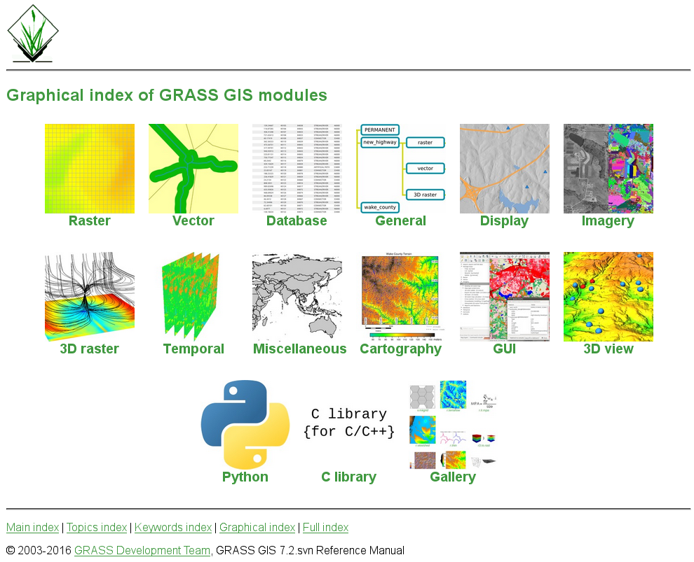
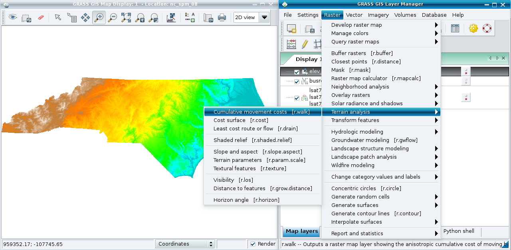
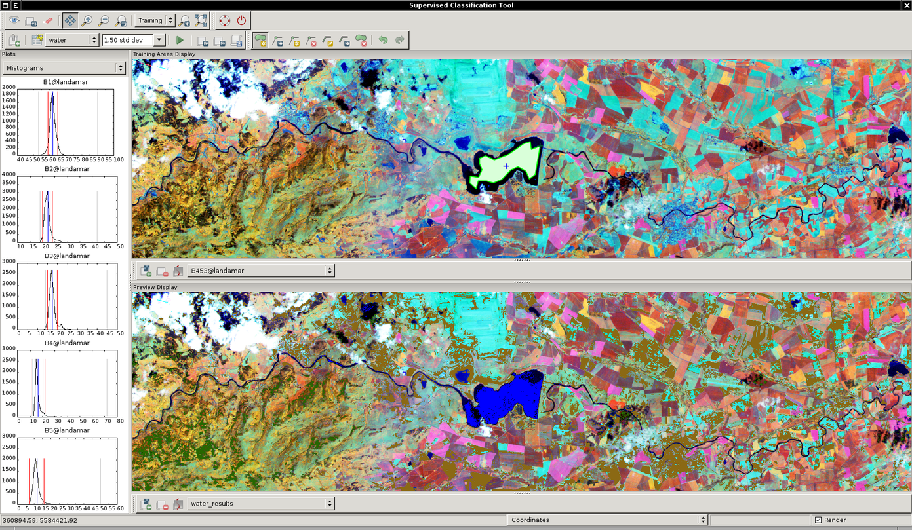
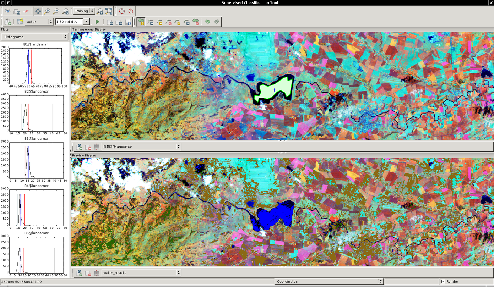
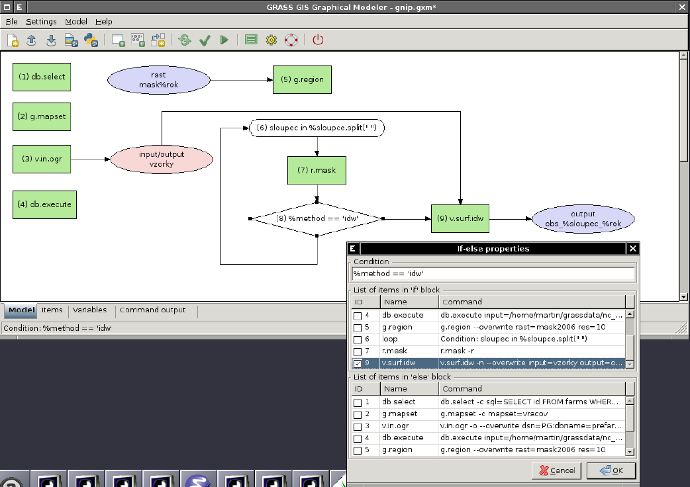
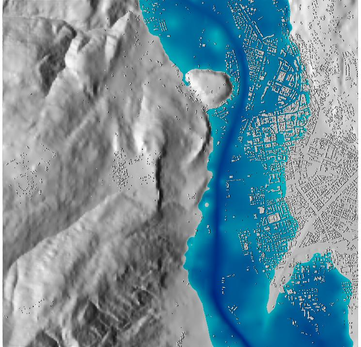

What's GRASS GIS?
Geographic Resources Analysis Support System
Open Source GIS, developed since 1984, since 1999 GNU GPL
Portable code (many operating systems, 32/64bit)
Your GIS backbone – linkable to:

Raster 2D/3D (voxel) processing
Vector 2D/3D topological processing
Vector network analysis support
Image processing system
Space-time cubes, temporal GIS
Native raster and vector format
3D Visualization system
DBMS integrated (SQL) with SQLite, DBF, PostgreSQL, MySQL and ODBC drivers
graphical overview
GRASS GIS 7 capabilities: a graphical overview
graphical index 
GRASS GIS 7 User interface
  
 
GRASS GIS 7: Geospatial Modeller
- Extra Bonus:
- Export to Python scripts 
Raster and 3D vector
| Elevation model combined with extruded 3D buildings | Trento, Italy Optional: KML export for virtual globes |
|---|---|
 |
 |
GRASS Topological 2D/3D Vector model
 Vector geometry types
Vector geometry types
- Point
- Centroid
- Line
- Boundary
- Area (boundary + centroid)
- face (3D area)
- [kernel (3D centroid)]
[volumes (faces + kernel)]
Geometry is true 3D when: x, y, z
Use of Spatial Index
GRASS Topological Vector Digitizer

GRASS GIS 7: Space-time functionality

t.register: Registers raster, vector and raster3d maps in a space time dataset

g.gui.tplot: plots the values of one or more temporal raster datasets for a queried point defined by a coordinate pair


GRASS GIS 7 and R integration
There is a dedicated R packages “rgrass7” for GRASS GIS data exchange

Python API integration
https://grasswiki.osgeo.org/wiki/GRASS_and_Python

Using Python and GRASS GIS 7 with ipython
An interactive (Web based!) shortcourse on writing GRASS scripts in Python


GRASS Addons: User contributed extensions
The Addons repository is SVN based:
One-click installation withextension manager
Increasing inflow of Python scripts
Users can easily obtain write access to develop new functionality
Peer review through SVN commitemail list
Also github, gitlab etc. now supported
Where's the stuff?
GRASS GIS 7 Software:
Free download for MS Windows, MacOSX, Linux and source code:
Addons (user contributed extensions):
Free sample data:
Rich data set of North Carolina (NC) … available as GRASS GIS location and in common GIS formats
User Help:
Mailing lists (also in different languages):